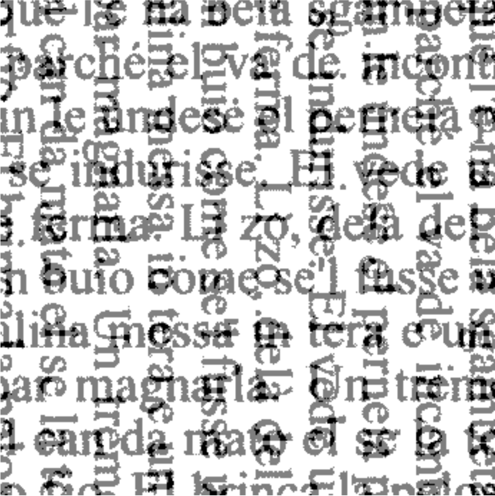

Our corpus consists of internet texts from the IIA as well as excerpts from books written in Talian. Text processing is being done in R (R Core Team, 2020), and optical character recognition (OCR) is being carried out using Google’s Tesseract (Smith, 2007). As a starting point, we used trained data from Italian in Tesseract, and later checked for potential mismatches. As of May 2021, the corpus contains 237,774 words and 18,804 sentences.
Last updated: May 01, 2021
The corpus currently has 25 variables/columns. In the table below, you can see a subset of the columns/variables in the corpus.
| sentence | wd | sLength | freq | IPA | nSyl | stress |
|---|---|---|---|---|---|---|
| El sera rode dela careta (2). | el | 6 | 8603 | ’el | 1 | final |
| El sera rode dela careta (2). | sera | 6 | 145 | ’se-ɾa | 2 | penult |
| El sera rode dela careta (2). | rode | 6 | 24 | ’ɾo-de | 2 | penult |
| El sera rode dela careta (2). | dela | 6 | 551 | ’de-la | 2 | penult |
| El sera rode dela careta (2). | careta | 6 | 89 | ka-’ɾe-ta | 3 | penult |
| Bragheta, quel di, se gavea perso drio el tordo ferio. | bragheta | 10 | 15 | bɾa-’ge-ta | 3 | penult |
| Bragheta, quel di, se gavea perso drio el tordo ferio. | quel | 10 | 661 | ’kwel | 1 | final |
| Bragheta, quel di, se gavea perso drio el tordo ferio. | di | 10 | 193 | ’di | 1 | final |
| Bragheta, quel di, se gavea perso drio el tordo ferio. | se | 10 | 3306 | ’se | 1 | final |
| Bragheta, quel di, se gavea perso drio el tordo ferio. | gavea | 10 | 559 | ga-’ve-a | 3 | penult |
The corpus follows a tidy data approach (Wickham & others, 2014), so little (if any) data wrangling is needed to analyze the data.
To access the corpus, click here. We highly recommend that you load tidyverse before loading the corpus itself.
APA:
Garcia, G. D., & Guzzo, N. B. (2021, April 12). Talian corpus: a written corpus of Brazilian Veneto. https://doi.org/10.17605/OSF.IO/63NRX. Available at https://guilhermegarcia.github.io/talian.html and https://nataliaguzzo.github.io/talian.html.
BibTeX:
@misc{Garcia_Guzzo_2021,
title={Talian corpus: a written corpus of Brazilian Veneto},
url={osf.io/63nrx},
DOI={10.17605/OSF.IO/63NRX},
publisher={OSF},
author={Garcia, Guilherme D and Guzzo, Natália B},
year={2021},
month={Apr}}
Copyright © 2021 Natália Brambatti Guzzo